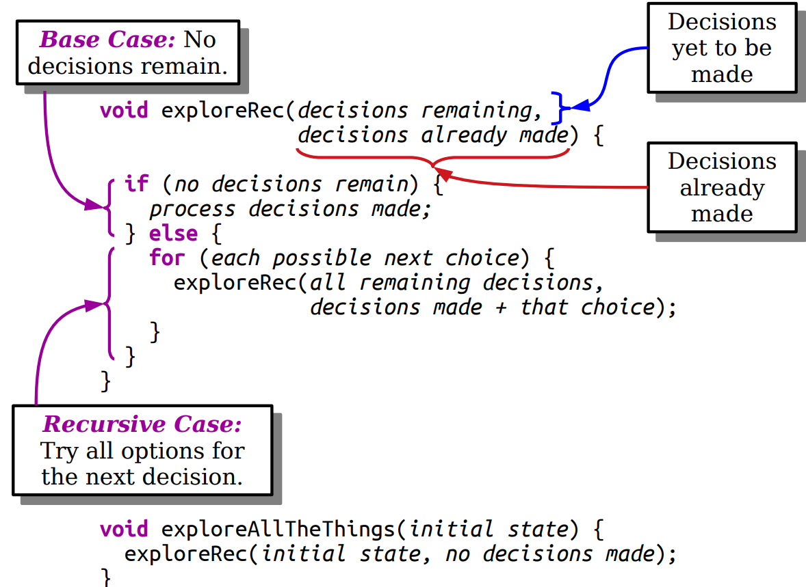
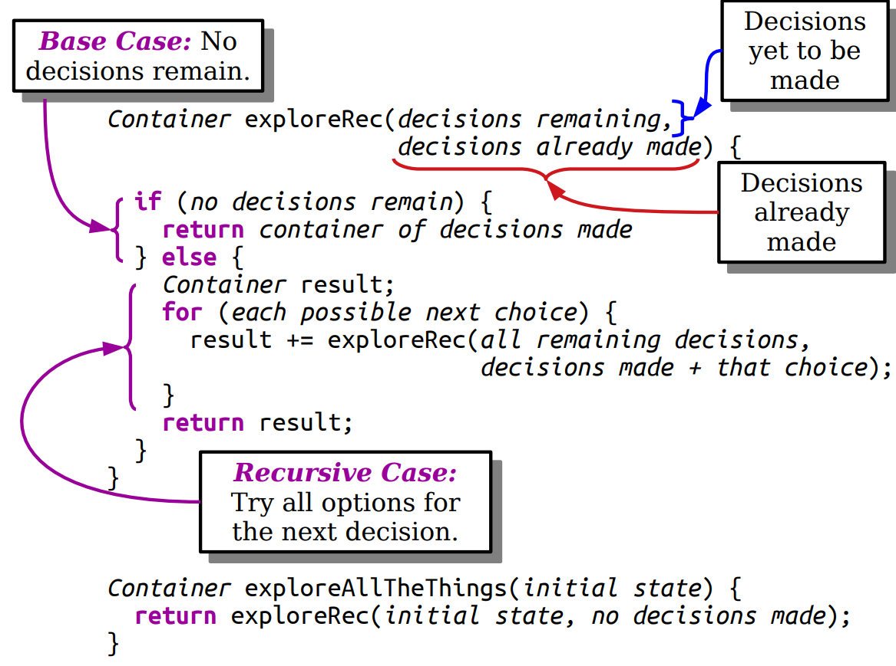
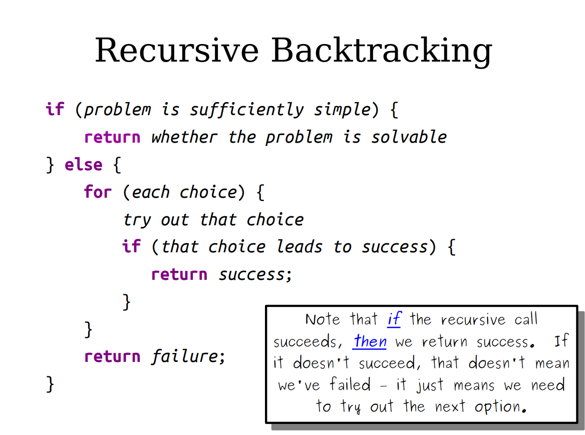
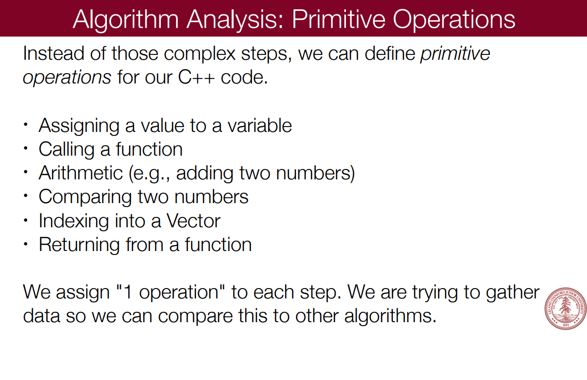
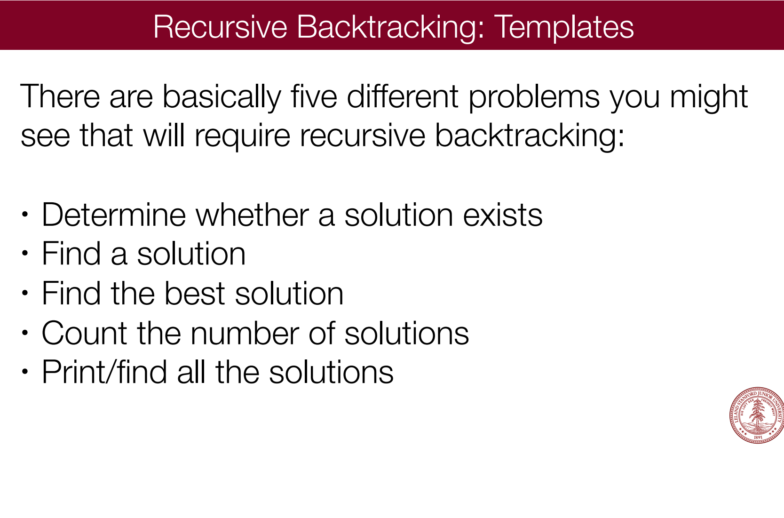
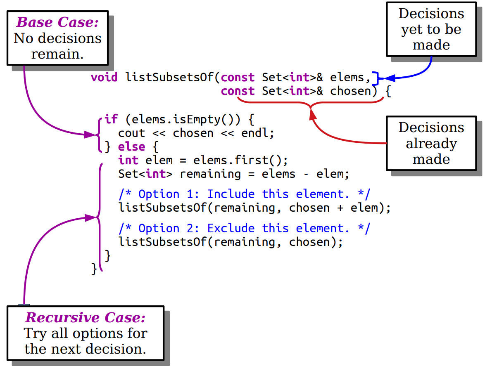

排序
二分
比较好记的染色法 从一个没有染色的区间开始处理，直至完成染色 开区间版本实现
l = -1,r = N;//数组长度N
// (l,r)是未被染色的区间
// l是蓝色，r是红色
while(l + 1 != r){//区间不为空
m = (l + r) / 2;
if(isBlue(m)) l = m;
else r = m;
}
return l or r;l<r-1，m=(l + r) / 2总是在(l, r)，区间总是能保证缩小，且缩小最多是正好变成空区间
l + r > 2l + 1 > 2l
l + r < 2r - 1 < 2r
| IsBlue()条件 | 返回 | |
|---|---|---|
| 第一个>=x | <x | r |
| 最后一个<x | <x | l |
| 第一个>x | ⇐x | r |
| 最后一个<x | ⇐x | l |
闭区间版本实现
l = 0,r = N - 1;//数组长度N
// [l,r]是未被染色的区间
// l - 1是蓝色，r + 1是红色
while(l <= r){//区间不为空
m = (l + r) / 2;
if(isBlue(m)) l = m + 1;
else r = m - 1;
}
return r or l;// ? return l - 1 or r + 1m=(l + r) / 2总是在[l, r]，区间总是能保证缩小，且缩小最多是正好变成空区间
整数二分
边界一定存在，但边界不一定是原问题的解
浮点二分
快速排序
void quick_sort(int q[], int l, int r)
{
if (l >= r) return;
int i = l - 1, j = r + 1, x = q[l + r >> 1];
while (i < j)
{
do i ++ ; while (q[i] < x);
do j -- ; while (q[j] > x);
if (i < j) swap(q[i], q[j]);
}
quick_sort(q, l, j), quick_sort(q, j + 1, r);
}如何使得x左侧都小于等于 右侧都大于等于
1.开两个新数组分别存再拷回来 同样是O(N)
2.双指针
注意选择以i分治时不能取x[l] j时不能[r] 容易边界问题 反例{1 2}
中间元素取l+r+1/2和不加1
i-1 i/j j+1对于i指针 指针停的位置是大于等于x的 之前的是小于等于x的
快速排序如何变成稳定的 将索引也纳入
归并排序
void merge_sort(int q[], int l, int r)
{
if (l >= r) return;
int mid = l + r >> 1;
merge_sort(q, l, mid);
merge_sort(q, mid + 1, r);
int k = 0, i = l, j = mid + 1;
while (i <= mid && j <= r)
if (q[i] <= q[j]) tmp[k ++ ] = q[i ++ ];
else tmp[k ++ ] = q[j ++ ];
while (i <= mid) tmp[k ++ ] = q[i ++ ];
while (j <= r) tmp[k ++ ] = q[j ++ ];
for (i = l, j = 0; i <= r; i ++, j ++ ) q[i] = tmp[j];
}高精度加法
高精度减法
高精度乘法
高精度除法
前缀和
O(1)区间查询
一维
二维
差分
O(1)区间修改（加减某个数）
p[i]+c则a[i...n]+c
因此，为了使区间[L,R]中的所有元素+c，只需p[l]+c p[r+1]-c
二维
因此，为了使区间[L,R]中的所有元素+c，只需p[x1][y1]+c p[x2+1][y]-c p[x1][y2+1]-c p[x2+1][y2+1]+c
树状数组
O(logn)单点修改，区间查询
tree[x]存储[x-lowbit(x)+1,x]中数的和
x的父节点是x+lowbit(x)
void update(int x,int d){
while (x<N){
tree[x]+=d;
x+=lowbit[x];
}
}
int sum(int x){
int ans = 0;
while (x>0){
ans+=tree[x];
x-=lowbit[x];
}
}
将树状数组中保存的值运用差分，即可变为区间修改，单点查询
//区间修改
update(L,x);
update(R+1,-x);
sum(i) //单点查询ST算法
O(1)区间最值查询
dp[s][k]左端点为k，区间长度为2^k的区间最值
dp[s][k]=min(dp[s][k-1],dp[s+1<<(k-1)][k-1])
区间[L,R]的最值为min(dp[L][k], dp[R-(1<<k)+1][k]，k为比区间长度小的最大的2的倍数
线段树
区间修改涉及到懒惰修改，tag数组意味着未向子树传递的更新量。
void build(int p,int pl,int pr){
if(pl==pr){
tree[p]=a[pl];
return;
}
int mid = (pl + pr) >> 1;
build(ls(p),pl,mid);
build(rs(p),mid+1,pr);
tree[p] = tree[ls(p)] + tree[rs(p)];//
}
//query(L,R,1,1,n)
int query(int L,int R,int p,int pl,int pr){
if (l<=pl&&pr<=r){
return tree[p];
}
push_down(p, pl, pr);
int mid = (pl + pr) >> 1;
int res = 0;
if (L<=mid) res += query(L,R,ls(p),pl,mid);//
if (R>=mid+1) res += query(L,R,rs(p),mid+1,pr);//
return res;
}
void update(int p,int pl,int pr,int x,int k){
if(pl==x&&pr==x){
tree[p]+=k;
return;
}
int mid = (pl + pr) >> 1;
if(x<=mid) update(ls(p),pl,mid,x,k);
if(x>=mid+1) update(rs(p),mid+1,pr,x,k);
tree[p] = tree[ls(p)] + tree[rs(p)];//
}
void update(int L, int R, int p, int pl, int pr, int d){
if (L <= pl && R >= pr){
addtag(p, pl, pr, d);
return;
}
push_down(p, pl, pr);
int mid = (pl + pr) >> 1;
if (L <= mid) update(L, R, ls(p), pl, mid, d);
if (R >= mid + 1) update(L, R, rs(p), mid + 1, pr, d);
tree[p] = tree[ls(p)] + tree[rs(p)];//
}
void push_down(int p, int pl, int pr){
if(tag[p]){
int mid = (pl + pr) >> 1;
addtag(ls(p),pl,mid,tag[p]);
addtag(rs(p),mid+1,pr,tag[p]);
tag[p]=0;
}
}
void addtag(int p,int pl, int pr,int d){
tag[p]+=d;
tree[p]+=d*(pr-pl+1);
}双指针
for (int i = 0, j = 0; i < n; i ++ ){
while (j < i && check(i, j)) j ++ ;
// 具体问题的逻辑
}位运算
lowbit
返回二进制表达式中最低位的1所对应的位权。
x&-x
离散化
保序 将值域很大但稀疏的数组映射
// std::vector<int> a, b; // b 是 a 的一个副本 并用b来存储离散化结果
std::sort(a.begin(), a.end());
a.erase(std::unique(a.begin(), a.end()), a.end());
for (int i = 0; i < n; ++i)
b[i] = std::lower_bound(a.begin(), a.end(), b[i]) - a.begin();并查集
路径压缩 按秩合并O(logn)
int find(int x){
if(x != p[x]) p[x] = find(p[x]);
return p[x];
}
void merge_set(int x, int y){
x = find(x);
y = find(y);
if(x != y) p[x] = p[y];
}节点到根的关系 关系具有传递性 可以方便求出节点之间关系
单调队列/栈
先加入且性质更差的一定不会被输出
连通集
单链表
插入 删除 遍历 建立
单链表逆转
每次将旧链表的头插入到新链表（即已经倒转的链表）的尾端 直至旧链表为空（循环不变式）
邻接表
双链表 双向循环链表
栈
顺序存储实现
Top指向栈顶前一个结点（仍存在）
#include<stdio.h>
#include<stdlib.h>
#include<stdbool.h>
#define ERROR -1
typedef int Position;
typedef struct SNode* PtrToSNode;
struct SNode
{
int* Data;
Position Top;
int maxCount;
};
typedef PtrToSNode Stack;
Stack CreateStack(int maxCount){
Stack S = (Stack)malloc(sizeof(struct SNode));
S->Data = (int *)malloc(maxCount * sizeof(int));
S->Top = -2;
S->maxCount = maxCount;
return S;
}
bool IsFull(Stack S){
return S->Top + 2 == S->maxCount;
}
bool IsEmpty(Stack S){
return S->Top + 2 == 0;
}
bool AddQ(Stack S,int x){
if(IsFull(S)){
printf("堆栈满\n");
return false;
}
else{
S->Top++;
S->Data[S->Top + 1] = x;
return true;
}
}
int DeleteQ(Stack S){
if(IsEmpty(S)){
printf("堆栈空\n");
return ERROR;
}
else{
S->Top--;
return S->Data[S->Top + 2];
}
}队列
顺序存储实现
Front指向队头的前一个结点（已被删除）
#include<stdio.h>
#include<stdlib.h>
#include<stdbool.h>
#define ERROR -1
typedef int Position;
typedef struct QNode* PtrToQNode;
struct QNode
{
int* Data;
Position Front;
int Count;
int maxCount;
};
typedef PtrToQNode Queue;
Queue CreateQueue(int maxCount){
Queue Q = (Queue)malloc(sizeof(struct QNode));
Q->Data = (int *)malloc(maxCount * sizeof(int));
Q->Front = Q->Count = 0;
Q->maxCount = maxCount;
return Q;
}
bool IsFull(Queue Q){
return Q->Count == Q->maxCount;
}
bool IsEmpty(Queue Q){
return Q->Count == 0;
}
bool AddQ(Queue Q,int x){
if(IsFull(Q)){
printf("队列满\n");
return false;
}
else{
Q->Count++;
Q->Data[(Q->Front + Q->Count) % Q->maxCount] = x;
return true;
}
}
int DeleteQ(Queue Q){
if(IsEmpty(Q)){
printf("队列空\n");
return ERROR;
}
else{
Q->Front = (Q->Front + 1) % Q->maxCount;
Q->Count--;
return Q->Data[Q->Front];
}
}前缀函数
π[i]表示在子串s[0...i]中最长相等的真前缀和真后缀的长度(真意为 不包括子串自身) i取[0,n-1]
规定π[0]=0
计算
第一个重要观察 相邻的前缀函数值至多增加1
当s[i+1]=s[π[i]]时，π[i+1]=π[i]+1
第二个重要观察
失配时希望找到仅次于π[i]的长度j继续匹配，初始化j=π[i]，迭代j=π[j-1]
vector<int> prefix_function(string s) {
int n = (int)s.length();
vector<int> pi(n);
for (int i = 1; i < n; i++) {
int j = pi[i - 1];
while (j > 0 && s[i] != s[j]) j = pi[j - 1];
if (s[i] == s[j]) j++;
pi[i] = j;
}
return pi;
}KMP
//求next数组=前缀表-1
int j = -1;
ne[0] = j;
for (int i = 1; i < m; i++) {
while (j != -1 && p[i] != p[j + 1]) j = ne[j];
if (p[i] == p[j + 1]) j++;
ne[i] = j;
}
// 匹配
for (int i = 0, j = -1; i < n; i++) {
while (j != -1 && s[i] != p[j + 1]) j = ne[j];
if (s[i] == p[j + 1]) j++;
if (j == m - 1) {
// 匹配成功后的逻辑
j = ne[j];
}
}i j指针都到底时算法必定结束 i移动m次 而j最多移动m次 O(n)
next[i] 表示 前i个字符中使得前k个字符恰等于后k个字符的最大的k. 特别地，k不能取i（此时自己与自己相等无意义了）上面代码里的统一减一
如何找到字符串中所有前后缀相等的
i1=next[n] i2=next[i1]…
字符串循环节n-next[n]
trie树
又称字典树，是一种状态机
struct trie {
//N为节点上限数，son为每个节点的指针域（共26个分支），cnt为每个节点的数据域，idx为当前总节点数
int nex[N][26], idx, int cnt[N];
void insert(char *s, int l) {
int p = 0;
for (int i = 0; i < l; i++) {
int c = s[i] - 'a';
if (!nex[p][c]) nex[p][c] = ++idx;
p = nex[p][c];
}
cnt[p]++;
}
int query(char *s, int l) {
int p = 0;
for (int i = 0; i < l; i++) {
int c = s[i] - 'a';
if (!nex[p][c]) return 0;
p = nex[p][c];
}
return cnt[p];
}
};
并查集
堆
哈希
字符串哈希
预处理出所有前缀的哈希
字符串看作P进制数
线性表
顺序存储实现和链式存储实现
图论
| 算法 | 单源/多源 | 存在负权边 | 时间复杂度 |
|---|---|---|---|
| 朴素Dijkstra | 单 | 否 | O(n^2) |
| 堆优化D~ | 单 | 否 | O(mlogn) |
| Bellman-Ford | 单 | 是 | O(nm) |
| SPFA | 单 | 是 | 一般O(m) |
| Floyd | 多 | 是 | O(n^3) |
Dijkstra
贪心 每次确定一个到起点距离最近的点 用它更新其他点（到初始点）的距离和前驱 将该点加到集合中 迭代n次
bellman-ford算法
循环n次，每次循环遍历所有边更新距离(备份 只使用上一轮循环的结果更新)
循环k次得到经过不超过k条边的最短距离
循环n次时若更新则必有经过n条边的最短距离 n条边 n+1个点 若n+1>点的个数则存在环且负环
spfa
只有以距离更新变小的点为起点的边的终点距离也会变小，只更新这些点，维护队列且保证队列元素不重复
维护最短距离对应边数，边数大于等于n时，n+1个点，负环
spfa中无法到达n号点则不会更新距离，而bellman会
Floyd
for (int k = 1; k <= n; k++){
for (int i = 1; i <= n; i++){
for (int j = 1; j <= n; j++){
d[i][j] = min(d[i][k] + d[k][j], d[i][j]);
}
}
}Prim
朴素O(n^2) 堆优化O(mlogn)
每次确定一个到集合距离最近的点 用它更新其他点（到集合）的距离和前驱 将该点加到集合中 迭代n次
Kruskal O(mlogm)
将所有边按照权重排序，枚举边，边不连通则连通
染色法O(n+m)
不含奇数（边）环则可二分
匈牙利算法O(nm),实际远小 难点
在目前匹配情况下没有搜索到以该点开始的增广路径则加入后面的点也不会有以该点开始的增广路径
存在增广链是增广当前匹配的充要条件
bool find(int x){
//遍历出边
for (int i = h[x]; i != -1;i=ne[i]){
int j = e[i];
if(!st[j]){
st[j] = true;
if(match[j]==0||find(match[j])){
match[j] = x;
return true;
}
}
}
return false;
}
for (int i = 1; i <= n1;i++){
memset(st, false, sizeof(st));
if(find(i)) res++;
}数学
逆序对
求逆序对数量
将数组元素看作树状数组的下标
1.逆序做法
将a[i]+1，将sum[i-1]加到结果中
也就是统计了出现在一个元素之后比它小的元素
2.正序做法
将a[i]+1，将已经处理的数的个数-sum[i-1]加到结果中
也就是统计了出现在一个元素之前比它大的元素
快速幂
long long binpow(long long a, long long b) {
long long res = 1;
while (b > 0) {
if (b & 1) res = res * a;
a = a * a;
b >>= 1;
}
return res;
}矩阵快速幂
此处为2x2矩阵
struct Matrix {
int a[3][3];
Matrix() { memset(a, 0, sizeof a); }
Matrix operator*(const Matrix &b) const {
Matrix res;
for (int i = 1; i <= 2; ++i)
for (int j = 1; j <= 2; ++j)
for (int k = 1; k <= 2; ++k)
res.a[i][j] += a[i][k] * b.a[k][j];
return res;
}
} ans, base;
Matrix qpow(Matrix base, int b) {
Matrix ans;
while (b) {
if (b & 1) ans = ans * base;
base = base * base;
b >>= 1;
}
}质数
试除法
O(sqrt(n))
合数的约数成对出现 判断是不是质数只需判断较小的数能否整除n
而d|n则(n/d)|n,令d⇐(n/d)则d⇐sqrt(n)
用i⇐x/i判断而不是i*i⇐x（溢出）或i⇐sqrt(x)（慢）
bool is_prime(int x)
{
if (x < 2) return false;
for (int i = 2; i <= x / i; i ++ )
if (x % i == 0)
return false;
return true;
}分解质因数
一个合数分解而成的质因数最多只包含一个大于sqrt(x)的质因数
枚举所有小于等于sqrt(x)的数i，将原数中该数的因子i除干净。当枚举到i时,n的因子不包括2到i-1中的数，若i|n,则i的因子不包括2到i-1的数，则i一定是质数
void divide(int x)
{
for (int i = 2; i <= x / i; i ++ )
if (x % i == 0)
{
int s = 0;
while (x % i == 0) x /= i, s ++ ;
printf("%d %d\n", i, s);
}
if (x > 1) printf("%d 1\n", x);
printf("\n");
}O(sqrt(n))
朴素筛法
枚举所有数，将该数的倍数筛掉 同上，当枚举到i时，没有被2到i-1筛掉 不是这些数的倍数 该数为质数
复杂度O(nlogn)
埃氏筛法
枚举所有数，只将所有质数的倍数筛掉 复杂度O(nloglogn)
质数定理：1-n中有n/lnn个质数
线性筛法
将每个数只用它的最小质因数筛掉
枚举所有数i 若i没有被筛则记录为素数，再对i从小到大枚举质数p[j]（p[j]⇐i）
若p[j]不|i，则p[j]一定小于i的所有质因子，p[j]也一定是p[j]*i的最小质因子
若（第一次找到）p[j]|i,则p[j]是i的最小质因子，p[j]也一定是p[j]*i的最小质因子
对合数x,假设p[j]是x的最小质因子，当枚举到x/p[j]（有x/p[j]>p[j]且x/p[j]的最小质因数大于等于p[j]）时被删除
每个合数都会被筛，只用最小质因子筛，每个合数一定有最小质因子
void get_primes(int n)
{
for (int i = 2; i <= n; i ++ )
{
if (!st[i]) primes[cnt ++ ] = i;
for (int j = 0; primes[j] <= n / i; j ++ )//保证p[j]*i在n范围内
{
st[primes[j] * i] = true;
if (i % primes[j] == 0) break;
}
}
}约数个数
约数之和
辗转相除法
int gcd(int a, int b) { return b == 0 ? a : gcd(b, a % b); }证明
已知两个数a和b
不妨设a>b
如果b|a，那么b就是二者的最大公约数。 下面讨论不能整除的情况，
由模的性质，d|a d|b则d|ax+by
而a mod b=a-kb
若d|a d|b则d|a mod b,反之若d|b d|a mod b,则d|a
则有a,b的公约数等价于b,a mod b的公约数，那么最大公约数应该也相同
有==gcd(a,b)=gcd(b,a mod b)==
辗转相除到最后发生gcd(a’,b’),而b’|a’（进一步，下一层递归调用为gcd(b’,0)），则b’为a’，b’的最大公约数，一路等价
欧拉函数
1-n中与n互质的数的个数
公式
容斥原理，先去除单个质因子的倍数，再加上任意两个质因子的组合的倍数，再减去…上述多项式展开系数符合该规律
筛法求欧拉函数
在线性筛法中,若i mod p[j]=0,p[j]是i的最小质因子,则有
若i mod p[j]!== ,p[j]不是i的质因子,则有
欧拉定理 若a与n互质,
费马小定理 质数p a不是p的倍数 则
快速幂
O(logk)
a的k次方模p k以二进制表示，预处理出a的2的0到logk次方的模
求逆元
若b与m互质，存在x使得
称x为b的模m乘法逆元，存在b的乘法逆元的充要条件是b与m互质
当m为质数时
扩展欧几里得算法
裴蜀定理
不全为0的整数a,b,存在整数x,y使得ax+by=gcd(a,b)
gcd(b,a mod b)=gcd(a,0)=a，对于后式取x=1,y=0即为解
bx+(a mod b)y=a
ay+b(x-(a\b)y)=a这样得到a，b的一组解
int exgcd(int a, int b, int& x, int& y)
{
if (!b)
{
x = 1, y = 0;
return a;
}
int d = exgcd(b, a % b, y, x);
y -= a / b * x;
return d;
}线性同余方程
给定a,m,b
b是gcd(a,m)的倍数时可以由裴蜀定理求出
若b不是,而等式左边是，则矛盾，无解
中国剩余定理
组合数
1.数据多 小，使用递推
2.数据数量中 大小中，预处理出阶乘
其中分母上的数使用逆元转化为乘法
逆元的乘积等于乘积的逆元
3.数据少 大，卢卡斯定理
容易证明
将a,b以k进制表示
4.数据极大 全部输出
先将组合数分解质因数，每个质因子出现次数等于a!中出现减去b!和(a-b)!中出现次数
计算n!中质因子p的次数=a\p+a\p^2+a\p^3+…
最后高精度乘法
卡特兰数
给定n个0和n个1，它们按照某种顺序排成长度为2n的序列，满足任意前缀中0的个数都不少于1的个数的序列的数量为： Cat(n) = C(2n, n) / (n + 1)
将原问题转化为二维坐标系下0表示向右走,1表示向上走，则要求等价为不经过y=x+1运动到(n,n),总数为C(2n,n)-C(2n,n-1)
动态规划
搜索
bfs→dijkstra 维护队列单调性 出队/入队时确定
双向广搜 某一个方向搜索队列为空意味着起点终点不连通
A*
启发函数
使用优先队列 保存起点到当前点的距离和当前点的距离到终点的估计距离 需要保证估计值小于等于真实值
只有终点出队时保证是最小距离
八数码
操作不改变逆序对数量奇偶性，充分必要条件是 数量为偶数
估计函数：当前状态中每个数与目标位置的曼哈顿距离之和
第K短路
估价函数：建反图，终点到每个点的距离
第k次搜到终点
单词接龙
记录单词之间最短前后缀长度 相当与单词之间有一条边
分成互质组
不互质的数之间连边
DFS
剪枝
优先选择（能使）选择数量少的 可行性剪枝 最优性剪枝 排除等效冗余
数独
用九位零一串表示某一行（或列 或九宫格）1-9能否填
取行 列 九宫格的交集
迭代加深
答案在浅层区域 控制搜索区域 O(N)
IDA*
估价函数



When you are analyzing an algorithm or code for its computational complexity
using Big-O notation, you can ignore the primitive operations that would
contribute less-important factors to the run-time. Also, you always take the worst
case behavior for Big-O.

长度最小子数组 移除元素 反转链表 删除倒数第n个结点 链表环
枚举
全排列
时间复杂度O(n*n!)
两种理解方式，落实到代码上一样
1.依次枚举每一个数放在哪一个位置
2.依次对于每个位置枚举放哪个数
全子集

组合枚举
def count_partitions(n, m):
"""用1到m的数构成n"""
if n == 0:
return 1
elif n < 0:
return 0
elif m == 0:
return 0
else:
return count_partitions(n-m, m) + count_partitions(n, m-1)